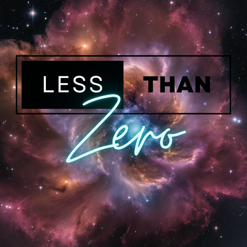

1. Brown Horse - Wreck
2. Cut Worms - Dream
3. Girl Scout - Simple Life
4. Lime Garden - Downtown Lover
5. The Smashing Pumpkins - 1979
6. The Afghan Whigs - House of I
7. Ali & Charif Megarbane - Mosaics
8. Angine de Poitrine - Sherpa
9. Rubbish Party - Plastic Orange
10. Cossmo - games
11. Witch Post - Witching Hour
12. The Weeknd - Blinding Lights
13. Sjowgren - feeling right by me
14. James Blake - Through the High Wire
15. Bob’s Burgers, The National & Låpsley - Bad Stuff Happens in the Bathroom (Bob’s Buskers)
16. Rock Plaza Central - Anthem for the Already Defeated
17. The Dead South - In Hell I’ll Be in Good Company
18. Frank Turner - Make America Great Again
19. Butthole Surfers - Jet Fighter
20. Luna Rosa - The Luge
21. The Beat - Tears of a Clown
22. The Dandy Warhols - She Sells Sanctuary